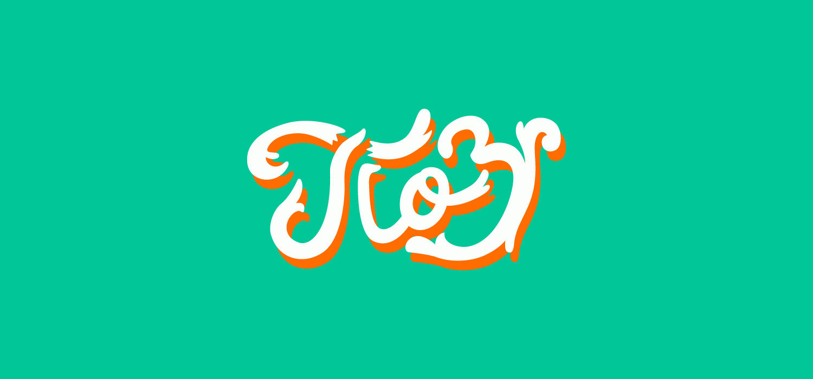
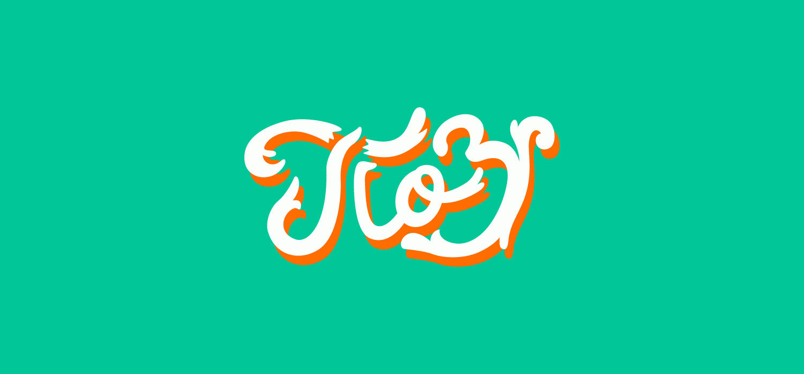

A selection of the typography heavy projects (some logos) completed between 2015 and present day for various clients.
Custom typography is something beautiful and unique to that project. There is not a font that can imitate it or something similar out there. All the projects were designed with a particular brand or need in mind which separates these designs from any other.
Done in the period 2015-2018
 
